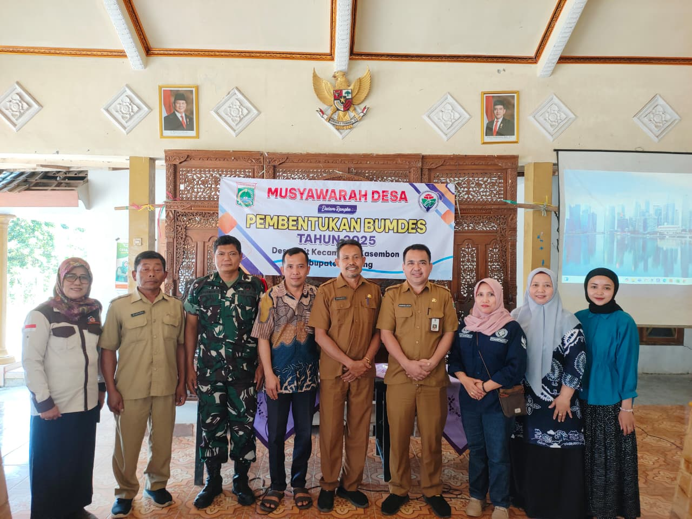

Pembentukan dan Pelantikan Pengurus BUMDes (Badan Usaha Desa)
Pada tanggal 12 Agustus 2025, Pemerintah Desa Pait menyelenggarakan kegiatan Musyawarah Desa (Musdes) dalam rangka pembentukan dan pelantikan pengurus Badan Usaha Milik Desa (BUMDes). Acara ini diadakan di Balai Desa Pait dan dihadiri oleh Kepala Desa beserta perangkat desa, perwakilan BPD, tokoh masyarakat, Babinsa, Bhabinkamtibmas, serta perwakilan kelompok masyarakat.
Pembentukan BUMDes ini bertujuan untuk mengoptimalkan potensi ekonomi desa serta meningkatkan kesejahteraan masyarakat melalui pengelolaan usaha yang mandiri dan berkelanjutan. Setelah melalui proses diskusi dan mufakat, para pengurus BUMDes Desa Pait resmi dilantik dan siap menjalankan tugasnya secara profesional, transparan, dan berorientasi pada kemajuan ekonomi masyarakat Pait.
Dengan terbentuknya BUMDes ini, diharapkan Desa Pait dapat memperkuat perekonomian lokal, membuka peluang kerja bagi warga, serta menjadi desa mandiri yang berdaya saing di wilayah Kecamatan Kasembon.
Berita Lainnya: ILASPP Desa Pait